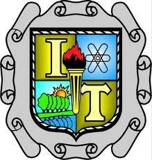
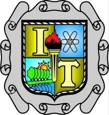
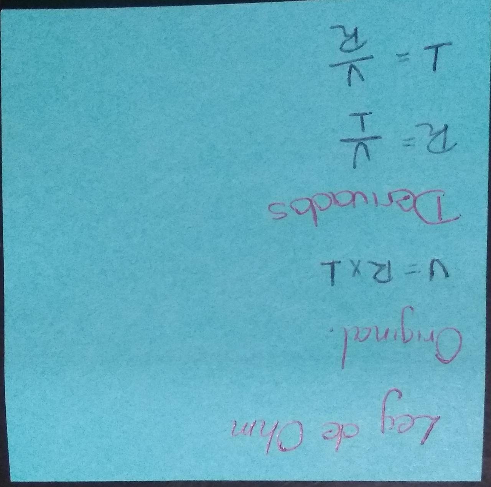
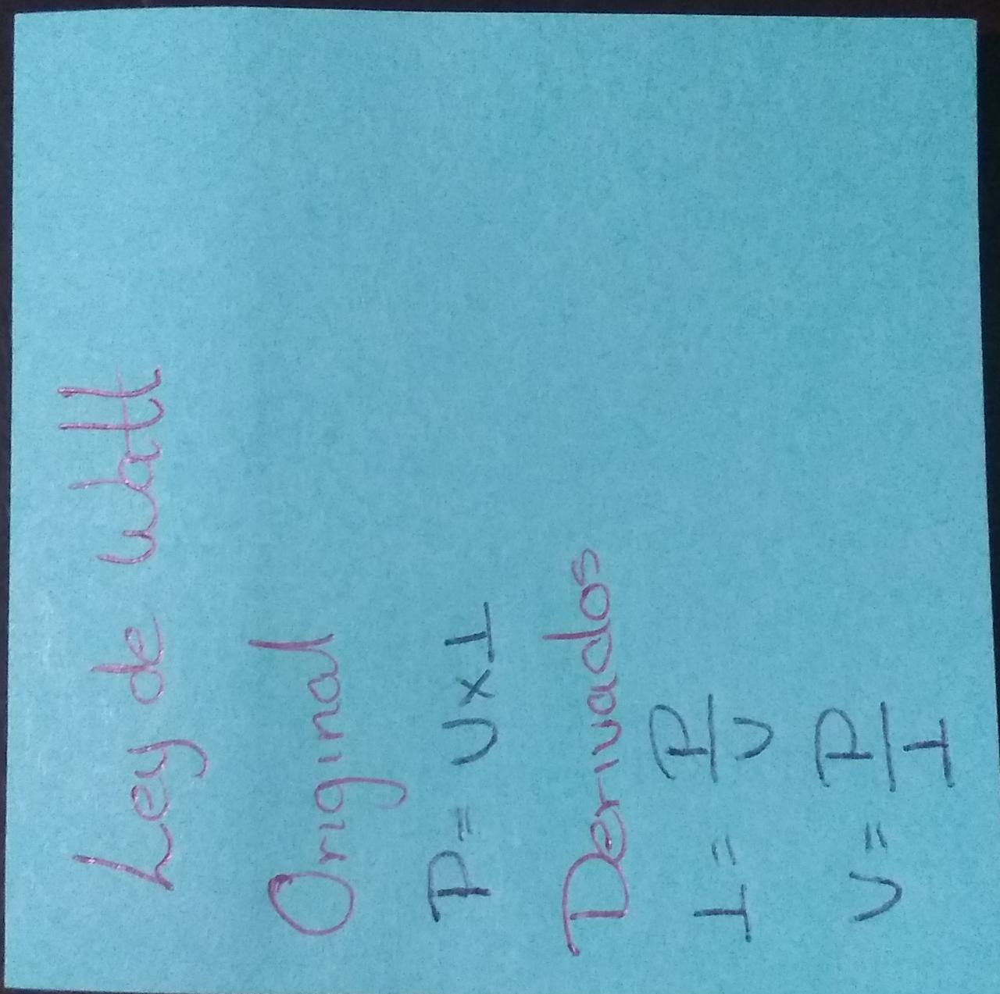
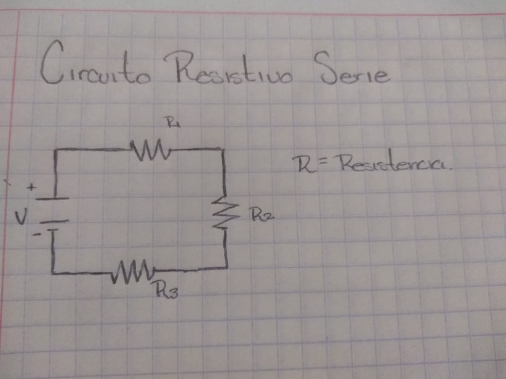
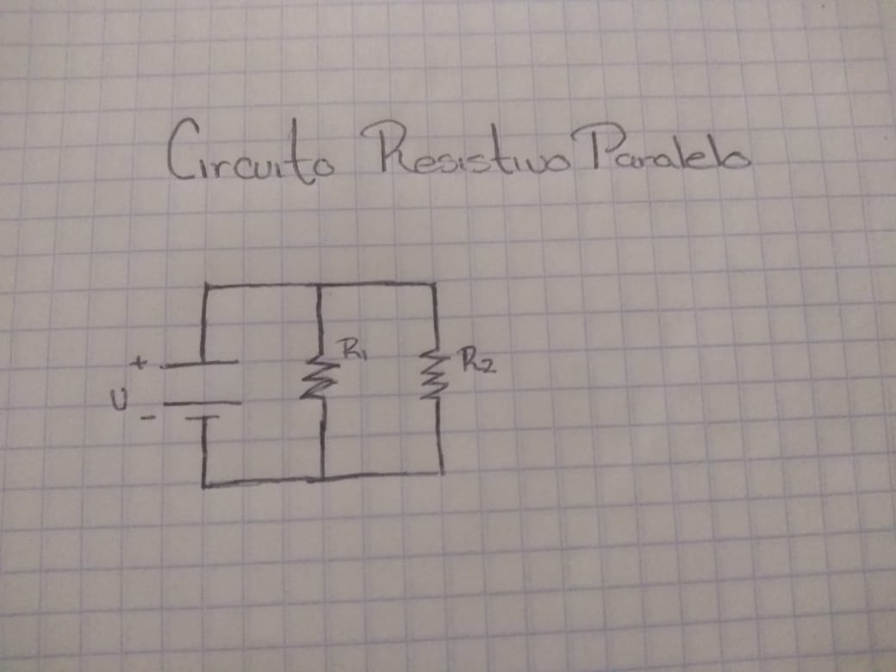
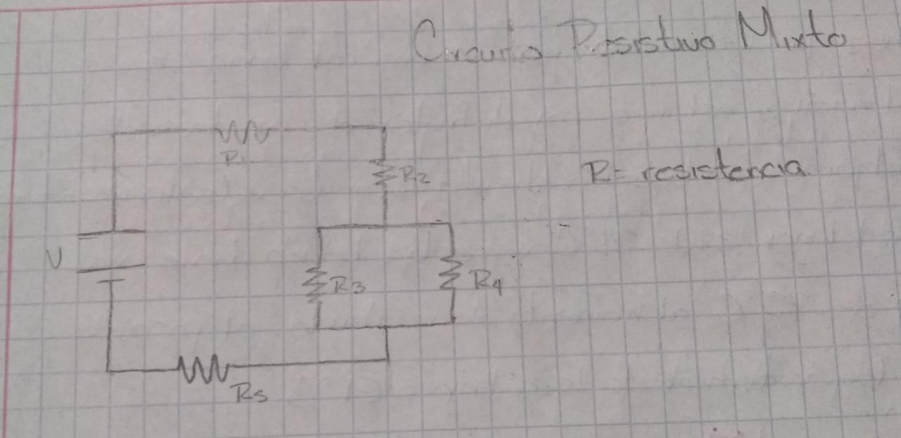
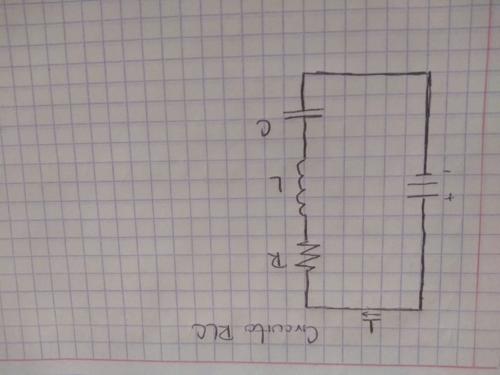
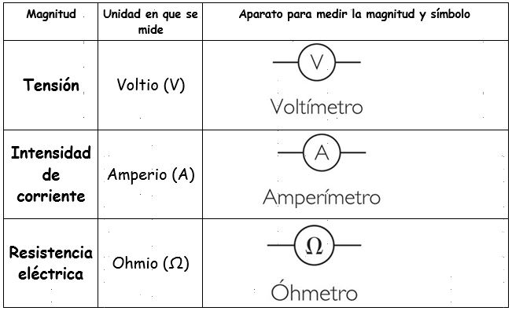
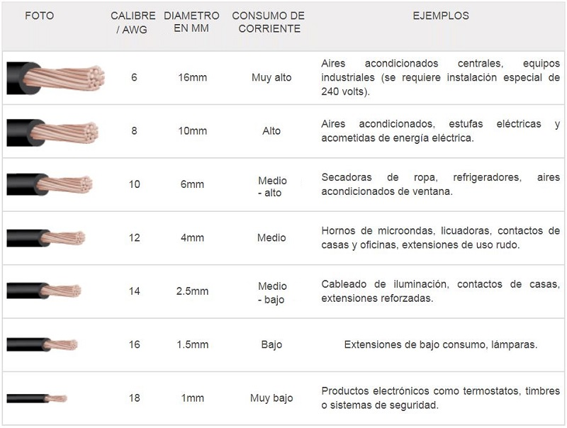

Ley de Watt
Como ley de Watt, o ley de la potencia electrica, se conoce aquella que afirma que la potencia electrica es directamente proporcional al voltaje de un circuito y a la intensidad que circula por el. Se resume en la siguiente formula:
P = V * I

Siendo que V representa el Voltaje en watts, I la intensidad en amperios y la P la potencia en vatios.
Nota:
Tanto en la ley de Ohm como en la ley de Watt se pueden despejar las formulas para asi poder sacar lo que se necesita.
 
1.4 Circuitos Resistivos.
Circuito Resistivo Serie
Se define un circuito serie como aquel circuito en el que la corriente electrica solo tiene un solo camino para llegar al punto de partida, sin importar los elementos intermedios. El voltaje total del circuito, es decir, el que proporciona la fuente de poder, sera igual a la sumatoria de todos los voltajes individuales de los elementos que componen el circuito. La resistencia equivalente en un circuito electrico en serie es la sumatoria de los valores de cada una de las resistencias que lo integran.

Voltaje Vt = V1 + V2 + V3 + ... Vn
Corriente It = I1 = I2 = I3 = In
Resistencia Rt = R1 + R2 + R3 + ... Rn
Circuito Parelelo
Se define un circuito paralelo como aquel circuito en el que la corriente electrica se separa en cada nodo. El voltaje en un circuito en paralelo es el mismo en todos sus elementos. La corriente electrica total del circuito sera igual a la sumatoria de todas las corrientes individuales de los elementos que lo componen. La equivalencia de un circuito en paralelo es igual al inverso de la suma algebrica de los inversos de las resistencias que lo integran, y su valor siempre sera menor que cualquiera de las resistencias existentes en el circuito.

Voltaje Vf = V1 = V2 = V3 = Vn
Corriente It = I1 + I2 + I3 + ... In
Resistencia Rt = (R1^-1 + R2^-1 + R3^-1 )^-1
Circuito Mixto
Los circuitos mixtos son una combinacion de los circuitos en serie y paralelo, es decir, un circuito mixto, es aquel que tiene circuitos en serie y paralelo dentro del mismo circuito.

Consejo: Para resolver los circuitos en mixto de este tipo, te recomendaria primero hacer los de tipo paralelo para asi tener al final un circuito en serie.
1.5 Circuito RLC.
Un circuito RLC es un circuito lineal que contiene una resistencia electrica, una bobina (inductancia) y un condensador (capacidad).
Existen dos tipos de circuitos RLC, en serio o en paralelo, segun la interconexion de los tres tipos de componentes. El comportamiento de un circuito RLC se describe generalmente por una ecuacion diferencial de segundo orden (en donde los circuitos RC y RL se comportan como circuitos de primer orden).
Con ayuda de un generador de senales, es posible inyectar en el circuito osilaciones y observar en algunos casos el fenomeno de resonancia, caracterizado por un aumento de la corriente (ya que la senal de entrada elegida corresponde a la pulsacion propia del circuito, calculable a partir de la ecuacion deferencial que lo rige).

1.6 Uso de instrumentos de medicion para comprobar parametros electricos.
primero que todo que son las mediciones electricas...
Las mediciones selectricas son los metodos son los metodos, dispositivos y calculos usados para medir cantidades electricas. La medicion de cantidades electricas puede hacerse al medir parametros electricos de un sistema. Usando transductores, propiedades fisicas como la temperatura, presion, flujo, fuerza y muchas otras pueden convertirse en señales electricas, que pueden ser convenientemente registradas y medidas.

Antes asi se median cada una de los parametros, bueno me refiero al aparato que se utilizaba para medirlos en la actualidad existen un aparato que trae todos esos incluidos, puede medir volts, amperios, resistencias, entre otros. Este aparato se llama multimetro.
El multimetro es un instrumento electrico portatil para medir directamente magnitudes electricas activas, como corrientes y potenciales (tensiones), o pasivas, como resistecias, capacidades y otras.

1.7 Conductores de corriente.
Los conductores electricos o materiales conductores son aquellos que tienen poca resistencia a la circulacion de la corriente electrica, dadas sus propiedades especificas. La estructura atomica de los conductores electricos facilita el movimiento en los electrones a traves de estos, con lo cual este tipo de elementos favorece la transmicion de electricidad.
Los conductores pueden presentarse de diversas formas, una de estas es el material en condiciones fisicas especificas, como barras de metal (cabillas) que no hayan sido elaboradas para formar de circuitos electricos. A pesar de no formar parte de un montaje electrico, estos materiales siempre mantienen sus propiedades de conduccion.
Caracteristicas
Los conductores electricos se caracterrizan por no ofrecer mucha resistencia al paso de la corriente electrica a traves de estos, lo cual solo es posible gracias a sus propiedades electricas y fisicas, que garantizan que la circulacion de electricidad por el conductor no induzca la deformacion o destruccion del material en cuestion.
Cables
Caracteristicas de los cables:
electricos partes, calibre y ampacidad: Son los elementos que proveen la trayectoria para le flujo de la corriente en las instalaciones electricas. Con los conductores electricos se hace la distribucion de la energia electrica para el control y consumo de los equipos de la instalacion.
a) Alma conductora: Es la parte que lleva toda la corriente de consumo. Los materiales comunmente utilizados sobre el cobre y el aluminio, pero con mas frecuencia de aluminio.
b) Aislante: Se encarga de separar o aislar el flujo de corriente exterior, para evirar cortocircuitos y la aelectrocucion. Este se fabrica de un material termoplastico o en hule.
c) Cubierta protectora: No todos la traen, esta se encarga de protegerel mateerial aislante y el arma conductora contra daños fisicos y quimicos. Se construyen generalmente de nylon, esto varia segun el ambiente al que se vaya a utilizar.
Es su capacidad de conduccion continua de corriente bajo condiciones especificas. La ampacidad de un conductor lo define su calibre, asi como la temperatura ambiente a la que se encuentre. Existen tablas que especifican la ampacidad de los conductores segun el material aislante, y la maxima temperatura ambiente a la que pueden estar expuestos. Mientras mas grande es la seccion del conductor mas corriente este puede conducir sin que se sobrecaliente.
En las instalaciones electricas existen diversas formas en las que se pueden distribuir la energia electrica, asi las condiciones en las que se debe someter los cables electricos. Por esta situacion se han diseñado diversos tipos de cables que dependen donde vayan a ser instalados. Estas condiciones pueden ser en una zona subterranea, area, equipos industruales o domesticos.
En esta imagen podemos observar el calibre del cable, el diametro en milimetros, consumo de corriente, un pequeño ejemplo y una foto del cable
